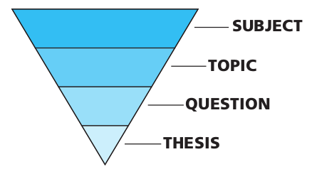

Methodology and presentation
Ahmad Yoosofan
University of Kashan
What is a research paper
It is a paper that
- Present an Original approach to some academic topic
- Organized around a central thesis
- Using insights based on research
- citing sources in scholarly fashion
Academic paper
Original Approach
Own idea
Primary and Secondary Sources
As you do your background reading, look for research sources that help to answer your research question and either
- strengthen
- challenge
- modify
- illustrate
- Primary sources are “raw materials” that directly reflect the topic you are writing about. They are usually created by participants or others who lived at the time of the events you are writing about.
- Secondary sources are reports of the research done by other people into your topic. They are usually written after the events you are writing about by people who didn’t participate in or witness those events
Your First Source: The Library
- Books
- Periodicals
- Other printed materials
- Non-printed materials
- Computer access to Internet sources
The World of Reference Materials
Here are nine main categories of reference materials
- Encyclopedias (general and specialized)
- Biographical dictionaries
- Periodical indexes
- Dictionaries of quotations and concordances
- Atlases and gazetteers
- Chronologies
- Dictionaries (general and specialized)
- Handbooks and sourcebooks
- Bibliographies
Scholars
Building new knowledge
- Universitiy
- research centers
- journalists
Practice of reading and writing
Why learning how to write a research paper
- draw information from several sources
- Practical life reasons
- economics
- any kind of decisions
- Understanding how to analyze, evaluate, criticize, combine, and draw conclusions
- Who is telling truth
- Even buying a house can be research
The Definition of a Research Paper
A research paper is a paper that
- presents an original approach to some academic topic,
- organized around a central thesis,
- using insights based on research, and
- citing sources in a scholarly fashion.
The Hierarchy of a Research Paper
Subject
- Look at the Table of Contents in the textbook for the course you’re studying. Which chapter, part, or section names cover people, things, places, events, or ideas that you have found especially interesting? Your subject could be one of these general areas.
- Take a stroll through the library or bookstore, paying careful attention to books, periodicals, and other media that are related to the course you’re studying. Your subject could be one of the general areas covered by these materials.
- Ask your teachers or professors for some guidance: In their experience, what sorts of sub-jects have their most successful students covered in their research papers? What sorts ofsubjects have they rarely seen a research paper cover but would find most interesting
Topic(I)
- Think about an important turning point in the events within your subject. Your topic could relate to the causes or effects of this turning point.
- Think about some fact you discovered that surprised you about your subject, something that thwarted your expectations. What made it surprising? Why did you expect something else? Your topic could relate to why your expectations were wrong.
- Think about an oversimplification that is commonly made regarding your subject. Your topic could relate to the complexitities that undermine this oversimplification.
- Think about a trend or “story” that connects several different events within your subject. Your topic could relate to connecting these events together, tracing the trend or “story” along the way.
Topic(II)
- Think about two or more situations or personalities within your subject that have qualities that are either similar or different. What caused them to have these qualities? What effects did these qualities have? Your topic could relate to comparing and/or contrasting these situations or personalities
- Take a stroll through the library or bookstore, paying careful attention to books, periodicals, and other media that are related to the course you’re studying. When you find an interesting topic that is only addressed in about a dozen or so materials, consider addressing a similar or related topic in your research paper.
- Ask your teachers or professors for some guidance: In their experience, what sorts of topics have their most successful students covered in their research papers? What sorts of topics have they rarely seen a research paper cover but would find most interesting?
Topic(III)
- Your topic shouldn’t be so broad that literally hundreds of books or articles have been written about it (in which case it would be too broad, and thus large enough to be considered a subject).
- Your topic shouldn’t be so narrow that only a handful of books or articles have been written about it (in which case it would be too narrow, and thus you would not be able to locate sufficient research sources)
A good topic
- is not merely a narrative
- is not too broad
- is not too narrow
- has research sources
- has not been overdone
- interests you
Question
Your research question is just the question or “puzzle” about the topic that your research paper will attempt to answer or solve
Thesis
A working thesis is a hypothetical answer to your research question — one that will guide you during your research. It probably won’t be the exact thesis you’ll discuss in your final research paper, but it might be.
A good working thesis
- can be stated in a single clear sentence,
- is a positive, non-obvious statement, and
- can be tested through research.
Bibliographical data to record for any sources that might potentially be helpful
- Call number
- Name of the author/editor
- Title and subtitle
- Edition/volume/issue numbers
- Place of publication
- Name of the publisher
- Copyright date
- Chapter/section/column/page numbers
- Features of the book that seem promising (especially bibliographies)
The Preliminary Bibliography
Your preliminary bibliography should include
- A few current and complete background books.
- The most important primary sources — described if not named.
- A few key secondary sources
Search Engines and Meta Search Engines
- filetype: pdf
- copyright:
- "Strict phrase"
- - does not occure
- regular expression
- ( ) + or and
- refine results based on date and other options
- site: yoosofan.github.io
Scientific Online Library
Article Samples
My articles
Article Formats
Persian Scientific Online Library
Bibliographic Tools
Forms of Scientific Publications
- Book
- Thesis
- Article
Book
- A form of publication
- Most people are familiar with
- Does not contain new results
- Does not provide evidence for the correctness of the information they present.
- Collect information and present it in
- an accessible
- readable form
- Textbooks are generally better written than papers.
- Established scientific knowledge
TextBook
- Mostly for undergraduate students
- However, there are excellent books for graduate students
Thesis
- Mostly University thesis
- deep or definitive exploration of a single problem
- More inclusive than papers may include
- Uninteresting failures,
- Invalid hypotheses,
- Misconceptions, and
- Experimental mistakes
- objective addition to scientific knowledge
- not a description of the path that was taken to the result
- Style is not just about how to write, but is also about what to say
Journal Paper
- End product of the research process
- A careful presentation of new ideas
- That has been revised according to suggestions or criticisms of
- referees
- colleagues
- Consists of
- Arguments,
- evidence,
- experiments,
- proofs, or
- Background required to support and explain a central hypothesis
- content of a paper must be
- defended and
- justified
- The process of research that leads to a paper can include
- Uninteresting failures,
- Invalid hypotheses,
- Misconceptions, and
- Experimental mistakes
- With few exceptions these do not belong in a paper.
- objective addition to scientific knowledge
- not a description of the path that was taken to the result
- Style is not just about how to write, but is also about what to say
A paper in conference proceedings
- End-product
- To report work in progress.
- Limited opportunities for
- iteration
- revision
- Maybe constrained by strict length limits
extended abstract
- Omitting detail of the work
- review the results of a research program
- may not include enough detail to make a solid argument for the claims.
purpose of reviewing
- attempt to ensure that papers published in a reputable journal or conference are
- trustworthy and
- high-quality work
- Witing is not the end of the research process, but instead shapes it
skepticism (scepticism)

- A questioning attitude or doubt towards one or more putative instances of knowledge which are asserted to be mere belief or dogma
- A unifying principle for the scientific culture that determines the value of research
- A skeptic seeks the most accurate description or solution that fits the known facts
- without concern for issues such as the need to seek favour with authorities
- Most scientists test the reliability of certain kinds of claims by subjecting them to a systematic investigation using some type of the scientific method
- pseudoscience: Improperly apply or ignore the fundamental aspects of the scientific method
- Absolute skepticism is unsustainable
- credulity is pointless
- Impossible for knowledge to progress without some degree of questioning
Steps of the Scientific Method(I)

Steps of the Scientific Method(II)
- Ask a Question
- Your Question
- Laboratory Notebook
- Do Background Research
- Background Research Plan
- Finding Information
- Bibliography
- Research Paper
- Construct a Hypothesis
- Variables
- Variables for Beginners
- Hypothesis
- Test Your Hypothesis by Doing an Experiment
- Experimental Procedure
- Materials List
- Conducting an Experimen
- Analyze Your Data and Draw a Conclusion
- Data Analysis & Graphs
- Conclusions
- Communicate Your Results
- Final Report
- Abstract
- Display Board
- Science Fair Judging
Steps of the Scientific Method(III)
- Formation of a precise question, the answer to which will satisfy the aim of the research
- Development of a detailed understanding, through reading and critical analysis of scientific literature and other resources
- Gathering of evidence that relates to the question, through experiment, analysis,or theory. These are intended to support—or disprove—the hypothesis underlying the question
- Linking of the question and evidence with an argument, that is, a chain of reasoning
- Description of the work in a publication.
End